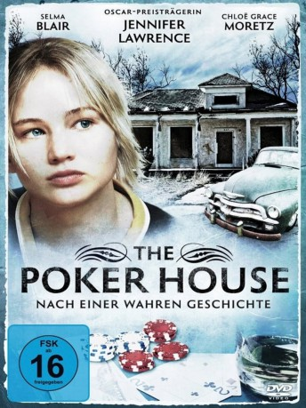

#9901 The Poker House
 
 IMDB-Wertung: 6.4 / 10
IMDB-Wertung: 6.4 / 10  Metascore: 0
Metascore: 0 
Teenager Agnes lebt mit ihren zwei kleinen Schwestern im heruntergekommenen Häuschen ihrer alleinerziehenden Mutter im schlechtesten Viertel einer amerikanischen Provinzstadt. Mutter betätigt sich ganz ungezwungen als Hure, also gehen Kunden, Kolleginnen, Spieler und Drogenhändler in ihrem Häuschen ein und aus. Agnes versucht, so gut es geht, die kleinen Schwestern vor diesem Leben fern zu halten. Doch als das Auge von Muttis Zuhälter auf deren älteste Tochter fällt, ist keiner da, um diese zu beschützen.
Jahr: 2008
Dauer: 93 Minuten
FSK: 16
Land: USA Studio: At EntertainmentTonspuren: DTS - ,
Untertitel:
Auflösung: 1080p (1920x1080) Größe: 7413 MB
Genre: Drama
Regisseur: Lori Petty
Drehbuch: Lori Petty, David Alan Grier, Lori Petty
Soundtrack: Mike Post
Darsteller:
 Jennifer Lawrence als Agnes
Jennifer Lawrence als Agnes- Javon Johnson als 1st 'John'
- Sophi Bairley als Bee
 Bokeem Woodbine als Duval
Bokeem Woodbine als Duval Chloë Grace Moretz als Cammie
Chloë Grace Moretz als Cammie- Casey Tutton als Sheila
- Matthew Gerdisch als Earl
- Robert Gerdisch als Burl
- Andrew Rothenberg als Clyde Senior
- Danielle Campbell als Darla
 Selma Blair als Sarah
Selma Blair als Sarah- Natalie West als Dolly
 David Alan Grier als Stymie
David Alan Grier als Stymie- Tyla Abercrumbie als Janette
- De'Shawn Washington als Black Tony
- Claudia Michelle Wallace als Drunk Lady
 Clarke Peters als Maurice
Clarke Peters als Maurice- Joey Bicicchi als Football player (uncredited)
 Debbi Burns als Basketball Fan (uncredited)
Debbi Burns als Basketball Fan (uncredited)- Steve Mikula als Restaurant Patron (uncredited)
- Aleh Neliubin als Party-goer (uncredited)
- Preston Tate Jr. als Black Teen (uncredited)
- Lucas Ellman als Clyde Junior
- Kymberly Mellen als Sheila's Mom
- Jayce Ryan als Daniel
- Kirsten Mose als Young Agnes
- Abby Phalen als Young Cammie
- Sara Hennessy als Young Bee
- James Earl Jones II als Popeye
- Rich Komenich als Meatball
- Phil Ridarelli als Mr. Goldstein
- Hashim Brown als Little Boy
- Julia Sobaski als Rowena
- Kevin Gudahl als Bob Elder
- Bernie Landis als Mr. Jefferies
- Terrion Johnson als Rondell
- Joshua Pertler als Pookie
- Adam McEwen als Dooey
- Justin McEwen als Deon
- Kazemde Fela Masud als Harold
- David Pompeii als Mooney
- Ellis Foster als Lincoln
- Greg Hollimon als 2nd 'John'
- Jeff Christian als Coach
- Anthony Brawner als Basketball Fan (uncredited)
- Robert Kramer als Extra (uncredited)
- Jonathan C. Legat als Photo Journalist (uncredited)
- Alan Sciranko als Score keeper (uncredited)
Datei: X:\2008(N-Z)\Poker House, The (2008, FSK16, 1920x1080).mkv seit 08.11.2018
Festplatte: HD 2008(G-Z)-2009(A-F)
 Es gibt insgesamt 91 Filme in der Gruppe '2008(N-Z)'
Es gibt insgesamt 91 Filme in der Gruppe '2008(N-Z)'